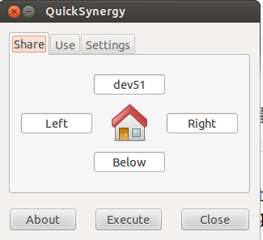

Bir Bilgisayarin Klavye ve Mouse'unu Digeri Icin Kullanmak
Diyelim ki evde ve iste farkli bilgisayarlar var, ama tum bunlari tek bir aletten kontrol etmek istiyoruz, bu durumda fare / klavye paylasim yazilimlari ise yarayabilir. Artik cogunlukla herkesin kendi dizustu oluyor, ama isyerinde masaustu (desktop) verilebiliyor mesela, ama biz bu masaustunu cogunlukla ona bagli kulustur (!) bir klavye uzerinden kullanmak istemiyor olabiliriz. Sahsi olarak zaten not defteri yumusak klavyelerine cok alistik, ve oteki turden klavye kullanmakta zorlaniyoruz.
Cozum olarak fare / klavye paylasim araclari faydali, dikkat - masaustu (desktop) paylasim araclari degil, mesela VNC gibi, fare / klavye paylasim araclari. Masaustu paylasiminda bir diger bilgisayara girip tamamen onun ekranini baska bir bilgisayarda goruyoruz, otekinde ise bir bilgisayarin sadece kontrollerini bir digerine aktariyoruz. Yani hala buyuk bilgisayarin buyuk ekranina bakiyoruz, ama klavye ve fare hareketleri dizustu makinasindan geliyor.
Bu alanda en iyi bilinen arac Synergy. Kurmak icin
synergy-foss.org/download/?alt
Buradan 1.3.8 indirilebilir. Dikkat, eger Ubuntu 12/13 farklari var ise, her iki bilgisayarda direk apt-get install iki bilgisayarda farkli surumleri kurabilir, ve farkli surumler birbiriyle konusamayabilirler. O sebeple 1.3.8'in deb dosyasini indirip sudo dpkg -i ile kurmak en iyisi. Bir not daha: Ubuntu sistem guncellemesi yaparken 1.3.8 paketini "eski" olarak gorup guncellemeye calisir, bu sebeple sistem guncellemesi sonrasi tekrar dpkg ile eski versiyona gecmeniz gerekebilir.
Kurulum yapildiktan sonra klavyesinin paylasilacagi "master" bilgisayardan bir de quicksynergy denen bir arac kurmak iyi olur. Klavye bilgisinin "gonderildigi" makinada
synergyc -f [master bilgisayar ip adresi]
Master uzerinde Accessories | Quick Synergy baslatiriz, ve
Share tab'i icinde dev51 yazdik, bu isim bizim /etc/hosts icinde hedef bilgisayarinin ip'sine tercume oluyor. Peki bu resimle ne soylemis oluyoruz? Diyoruz ki eger dizustunde fareyi hareket ettirirken isaret dizustu ekranindan yukari dogru "tasarsa", synergy bu durumu algiliyor ve fare isaretini oteki bilgisayarda hareket ettirmeye basliyor! Klavye yazimi da bu noktadan sonra diger bilgisayara dogru akmaya basliyor! Eger geri dizustune donmek istersek tam tersini yapiyoruz, oteki bilgisayarin ekraninda fareyi asagi dogru hareket ettirip alttan disari "tasiyoruz" ve synergy bunu da algilayip bizi dizustu makinasina geri donduruyor.
Not: Synergy'nin islemesi icin her iki bilgisayarin birbirini yerel ag uzerinden gormesi lazim (yani ping ile birbirlerinin ip'sini gorebilmeliler). Eger sirketinizin IT departmanini ugrastirmak istemezseniz, is yerine basit bir network switch goturebilirsiniz, ve surada tarif edildigi gibi statik IP'ler uzerinden bir "alternatif ag" kurabilirsiniz. Mesela sirket ici ip adresleri 10.1.1.x ile basliyorsa, bu alternatif agi 192.168.1.x uzerinden tanimlayabiliriz. Bu durumda, dis Internet baglantisi bile her iki bilgisayarda normal sirket agi uzerinden akmaya devam edecektir, ama bizim iki bilgisayar birbiriyle 192.168.1.x uzerinden baglanti kurabilirler. Statik tanim sirasinda tek dikkat edilmesi gereken switch'e baglandiktan sonra statik IP tanimini "Wired Connection 2" gibi "farkli" bir isimde cikacak ikon uzerinden yapmak. Bunun haricinde baska hicbir ek tanima gerek yok.
